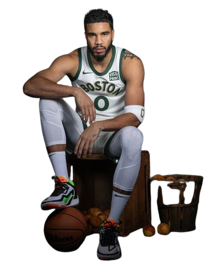

- JAYSON TATUM
- He is a rising superstar in the NBA known for his versatile scoring ability and two-way impact. The 6'8" forward has quickly established himself as one of the league's premier talents, showcasing an array of polished offensive skills paired with a long, rangy defensive presence. Tatum's clutch performances, including leading the Boston Celtics to the 2022 NBA Finals, have solidified his status as a bona fide superstar and one of the faces of the next generation of NBA greats.
 Hero 4
Hero 5
Card Gallery
Hero 4
Hero 5
Card Gallery